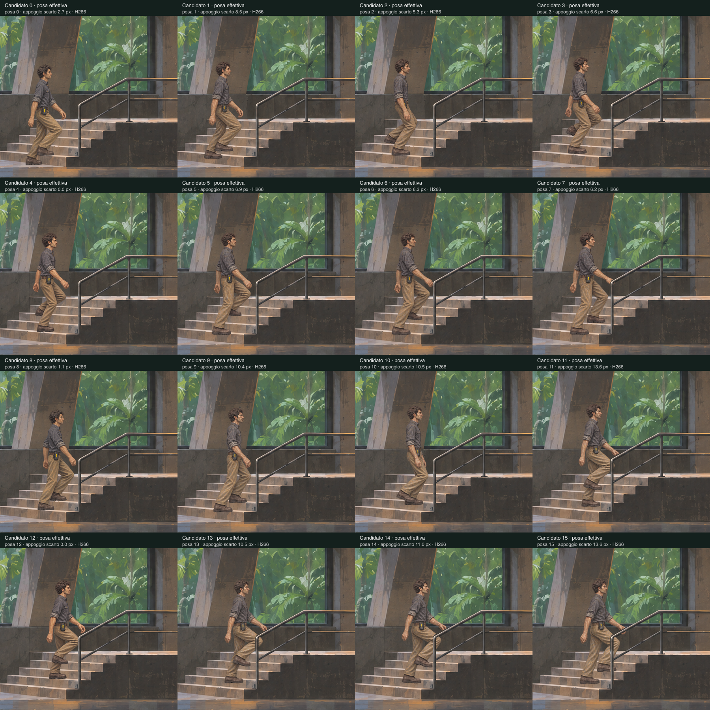

Il corpo avanza continuamente e si ferma su due gradini. I disegni intermedi hanno ancora appoggi incoerenti: fino a 14,1 px in orizzontale e 13,8 px in verticale a questa scala. Questo video è una prova diagnostica, non una nuova versione pubblicata del gioco.
Il filmato parte dal primo appoggio rialzato, mostra rilascio, arresto e ripresa, poi tiene l’ultimo contatto. Ingresso dal pavimento, raccolta, inversione e discesa sono ancora da completare.
Verifica degli errori effettivi · Rapporto e raccordi mancanti
